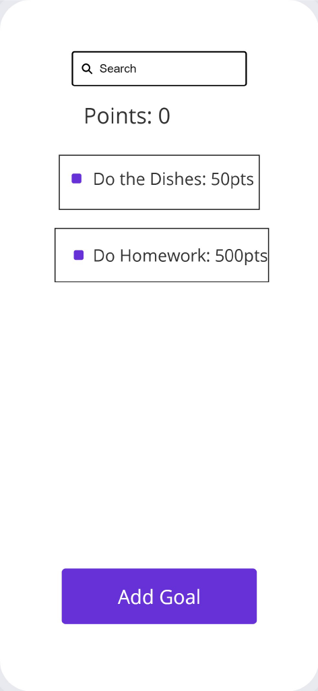

Overview
Purpose
Our Purpose is to give the average person a fun way to track the daily quests of their lives
Audience
Our goal is to toach as many lives as possible. Specifically we want to help anyone who has trouble maintaining motavation to do specific tasks or to makes goals and imidiatly forgets about them
Dynamic elements
This project is going to include a javascript card array to store the individual habits, with a for each method to cycle through the cards. There will also be a render method to include the card array to the html. I also plan to include a search function to filter the array and display those results
Branding
Website Logo
Style Guide
Color Palette
Palette URL: https://coolors.co/14b8a6-334155-6ee7b7-f97316| Primary | Secondary | Accent 1 | Accent 2 |
|---|---|---|---|
| [#14B8A6] | [#334155] | [#6EE7B7] | [#F97316] |
Pseudocode for your project
Upon opening this the user will see the sites Logo and a search bar. They will also see a an add button. If they click on the add button they will be able to add a task. As they add tasks they are added to an array and stored. They will also see those tasks populating the middle area. If they use the search bar it will filter the tasks they can see. on every task there will be a complete button that will remove the task from the listed tasks.
Wireframes

Landing page
[Any additional details about home that the wireframe does not make clear]
[Page 2 if needed]
[Any additional details about page 2 that the wireframe does not make clear]